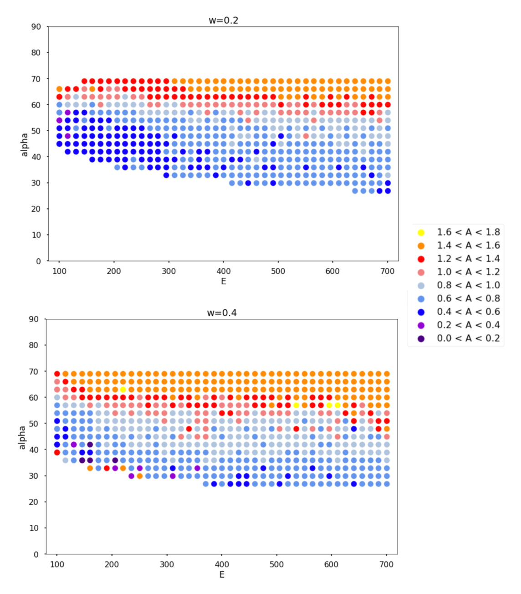
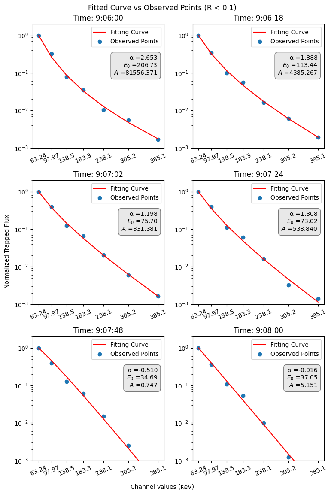

C. & J. Nyheim Plasma Institute · Drexel University
Nonlinear electron transport in the magnetosphere
Electron super- and sub-diffusion in velocity space due to nonlinear resonances with whistler-mode waves
The research question
Energetic electrons in Earth's magnetosphere exchange energy with electromagnetic waves. Repeated interactions can change both their energy and their pitch angle, the angle between a particle's velocity and the magnetic field. This project investigated how nonlinear resonances with whistler-mode waves can produce spreading that is faster or slower than ordinary diffusion.
As a research assistant in the Computational Physics Laboratory, I worked on numerical models of these interactions and statistical analysis of satellite observations. My contributions included Julia simulations of repeated resonant interactions and a Python pipeline for processing ELFIN electron-flux measurements. These were complementary modeling and observational analyses; the examples below do not establish quantitative agreement between simulations and satellite data.
Modeling repeated wave-particle interactions
I developed Julia simulations that update electron energy and pitch angle over successive resonant interactions. The model represents two processes: phase bunching, which produces relatively small energy changes, and phase trapping, which can produce larger jumps. Their probabilities and energy changes depend on the geometry of the resonance.
- Numerical calculations: used root finding and quadrature to calculate the area enclosed by a resonance separatrix, the boundary between trapped and untrapped motion.
- Particle ensembles: simulated repeated interactions across initial energies and pitch angles, then examined how the distributions spread.
- Transport diagnostics: compared early-time spreading rates and mapped their dependence on initial conditions and wave frequency.
To describe ensemble spreading, we define a normalized mean squared displacement from each particle's initial state:
K is the number of trajectories and n counts resonant interactions. ΔEn,k = En,k − E0,k is particle k's energy change in keV; Δαn,k = αn,k − α0,k is its equatorial pitch-angle change in degrees. The scales are 350 keV and 60°, so M is dimensionless. It measures displacement from initial states, rather than variance about the ensemble's evolving mean.
M(n) ∝ nA
A slope A on logarithmic axes describes slower-than-linear (A < 1), approximately linear (A ≈ 1), or faster-than-linear (A > 1) growth over the selected interactions.
The model examples show that early spreading varies with initial energy and pitch angle. These results concern finite sequences of modeled interactions; they do not establish asymptotic sub- or super-diffusion. The relationship between changes in trapping probability and spreading was an investigated explanation, rather than an established general result.

Analyzing satellite electron spectra
A separate observational strand used ELFIN satellite measurements of trapped and precipitating electrons. I built Python tools to align electron-flux measurements with spacecraft position, calculate precipitation-to-trapped-flux ratios, and compare energy spectra.
I normalized spectra to the lowest-energy channel and fitted power-law models with an exponential cutoff. Medians, histograms, and density estimates helped compare groups with different precipitation characteristics. This work characterized the observations and provided a complementary perspective on electron transport.

A Hamiltonian perspective
I also studied a slowly varying Hamiltonian system by integrating trajectories, calculating adiabatic invariants, and comparing ensembles of initial conditions. These calculations examined how initial positions in phase space relate to later distributions of the action, an integral describing motion along an orbit. They provided a different perspective on the behavior already being studied. The results did not establish a distinct conclusion, so this strand was not developed further.